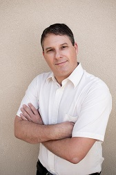

-

Alberto (Tito) Mandler - CEO
Aero-Space engineer with over 20 years of experience.
Co-founder and VP R&D of Centipede-Semi which raised from KV and Lip-Bu Tan.
Served at Israeli Air Force (IAF). -

Eyal Ben-Shahar - VP R&D
System engineer with over 20 years of experience.
Chief system engineer (director) at Israel Aerospace Industry (IAI), leading full-scale aircrafts development, managing over 500 engineers.
Served at Military Intelligence Technological unit. -

Dr. Leah Mandler – VP marketing
Extensive experience in resource development,
collaboration projects and marketing.